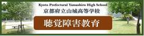

SKIP
ホーム
トピックス
新着情報
学校紹介
教育内容
学校生活
入学案内
部活動
在校生の皆様へ
卒業生の皆様へ
保護者の皆様へ
アクセス
お問い合せ
サイトマップ
アクセス
お問い合せ
〒603-8335
京都市北区大将軍坂田町
29
TEL.075-463-8261
京都府立山城高等学校
Kyoto Prefectural Yamashiro High School
進化し続ける伝統校 ネクストステージへ
Topics
トピックス (
一覧はこちら
)
令和7年度入学予定者登校日について
長期休業期間中の業務休止日について
お詫びと訂正〈中学校教員対象学校説明会〉
４月12日に公開した「令和６年度 学校説明会等の日程」のうち、「中学校教員対象学校説明会」に誤りがありました。 ご迷惑をおかけしましたことをお詫びするとともに、下記の通り訂正させていただきます。 ...
令和７年度教育実習希望者への案内
令和７年度教育実習の申し込み受付は終了しました。御協力ありがとうございました。
令和７年度教育実習希望者への案内
令和７年度教育実習を令和７年５月下旬～６月中旬ごろに予定しています。 申し込み受付は電話にて行います。令和６年５月１日(水)～５月24日(金)16:30までに本校に連絡（075-463-8261...
令和６年度入学予定者の皆様へ
令和６年度高校生活のしおりに関する訂正について 高校生活のしおりP.17ページ記載の「入学前の課題」について誤りがありました。つきましては、お詫び申し上げますとともに、以下の通り訂正をさせて...
令和６年度入学予定者登校日
学校感染症による出席停止の手続きについて
▷学校感染症による出席停止について ▷インフルエンザ欠席報告書 ▷登校許可書（インフルエンザ以外の学校感染症） ※新型コロナウイルス感染症については、「▷学校感染症による出席停止について」の...
京都府高等学校体育指導書連盟からのお知らせ
令和４年度末退職者調査用紙は以下よりダウンロードしてください。 令和４年度末退職者調査用紙.docx
令和５年度入学予定者登校日
News
新着情報 (
一覧はこちら
)
2025年03月01日
女子テニス部ＴＯＰＩＣＳ
女子テニス部 三冠達成
2025年02月28日
年間行事
令和６年度卒業証書授与式
2025年02月25日
卓球部ＴＯＰＩＣＳ
第48回京都府公立高等学校卓球大会 試合結果
2025年02月20日
普通科研修旅行 新着情報
令和６年度 第２学年普通科研修旅行台湾方面最終日
2025年02月19日
普通科研修旅行 新着情報
令和６年度 第２学年普通科研修旅行台湾方面３日目
2025年02月18日
普通科研修旅行 新着情報
令和６年度 第２学年普通科研修旅行台湾方面２日目
2025年02月17日
普通科研修旅行 新着情報
令和６年度 第２学年普通科研修旅行台湾方面１日目
2025年02月07日
令和7年度入学予定者登校日について
2025年02月03日
弓道部ＴＯＰＩＣＳ
試合成績
2025年02月03日
年間行事
令和６年度グローバルネットワーク京都交流会
2025年01月27日
野球部ＴＯＰＩＣＳ
第97回選抜高等学校野球大会21世紀枠 選考結果
2025年01月27日
ダンス部ＴＯＰＩＣＳ
ダンス部 バトル大会への挑戦
2025年01月23日
ワールドワイドパイオニア...
台湾 國立彰化女子高級中學との国際交流
2025年01月23日
野球部ＴＯＰＩＣＳ
斎藤 佑樹氏「未来のメッセージ」（バーチャル野球）、山城...
2025年01月21日
弓道部ＴＯＰＩＣＳ
試合成績
2025年01月20日
女子テニス部ＴＯＰＩＣＳ
女子テニス部 近畿公立高等学校テニス大会 優勝
2025年01月15日
吹奏楽部ＴＯＰＩＣＳ
ニューイヤーコンサート
2025年01月08日
年間行事
令和６年度３学期始業式
2024年12月23日
各種選抜要項
令和７年度 前期選抜について
2024年12月23日
ワールドワイドパイオニア...
京都探究エキスポ
学校紹介
About Us
校長挨拶
教育方針
学校沿革
校歌・制服
施設紹介
学校紹介
About Us
入学案内
How To Apply
学校説明会
各種選抜要項
スクールガイド
入学案内
How To Apply
学校生活
School Life
年間行事
山城高校の一日
研修旅行
学校生活
School Life
教育内容
Academic
教育の特色
文理総合科の教育
普通科の教育
進路指導
進路実績
教育内容
Academic
部活動
Club Activities
体育系クラブ
文化系クラブ
部活動
Club Activities
在校生の皆様へ
卒業生の皆様へ
保護者の皆様へ

京都府立山城高等学校
山城高校サイト制作：京都のホームページ制作会社エヌエスティ